Eigenvectors, insulation scores and dot calling on GM12878 Hi-C, and what the calls mean
Hi-C: from reads to contact matrices ended with a balanced matrix and its expected value at each distance. This lecture turns that matrix into the three features of 3D genome organisation, and checks them against other data.
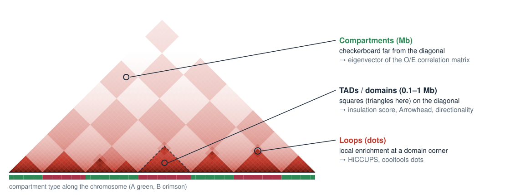
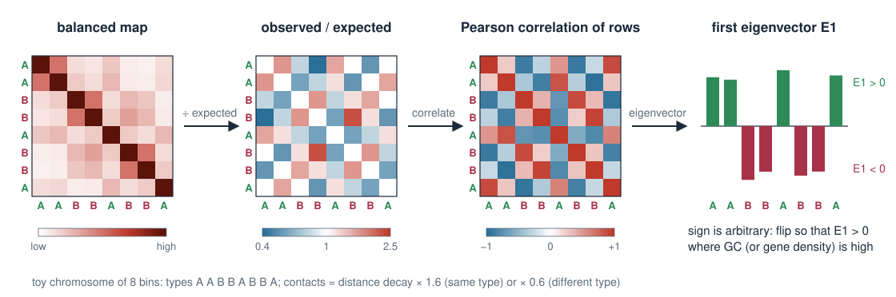
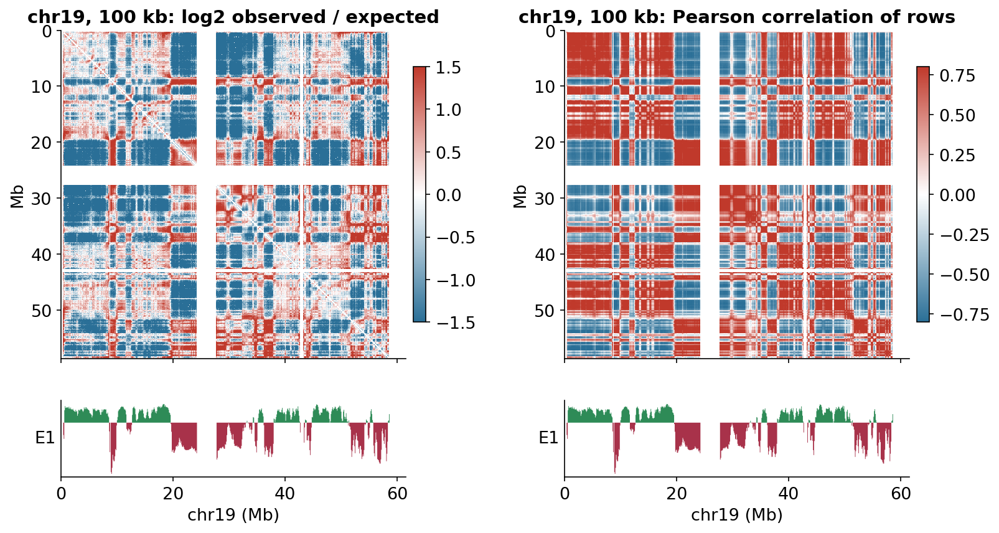
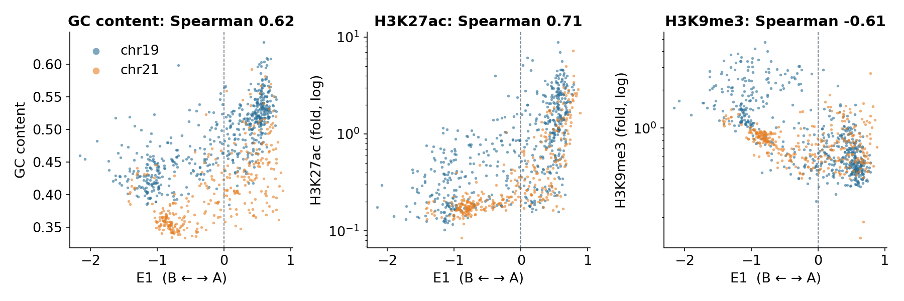
eigs_cis(..., view_df=arms).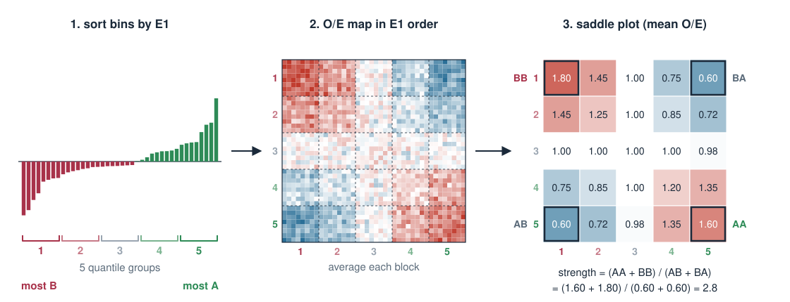
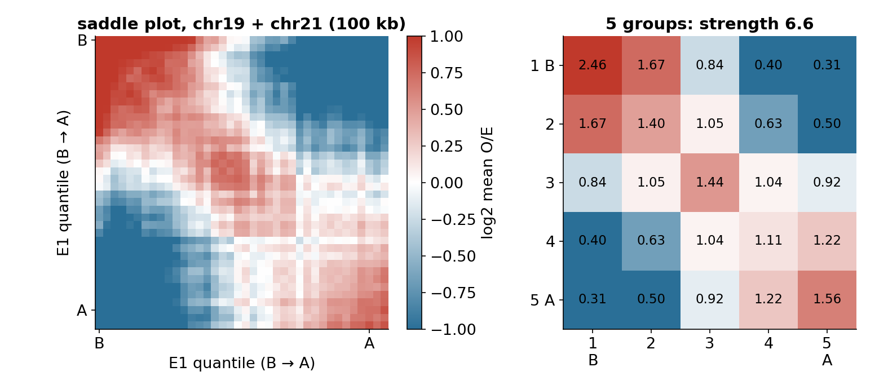
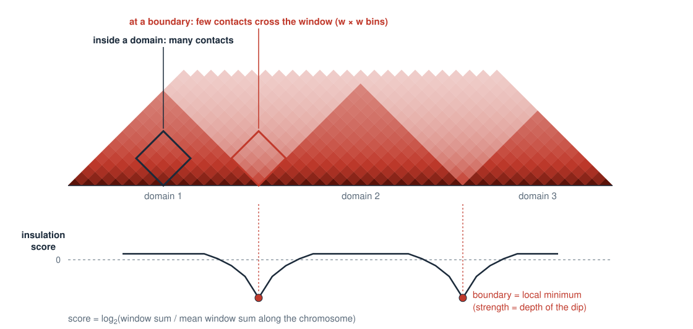
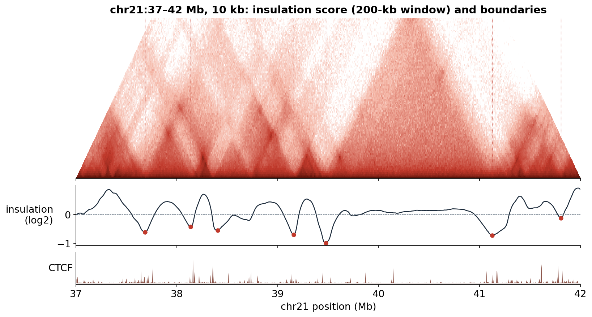
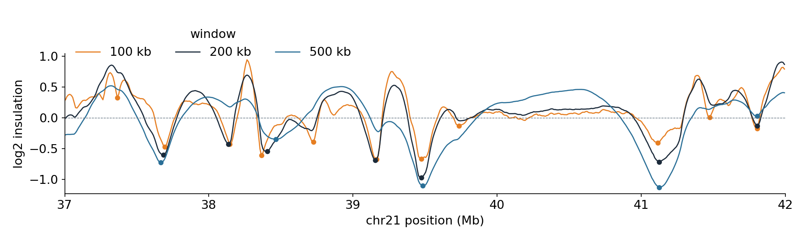
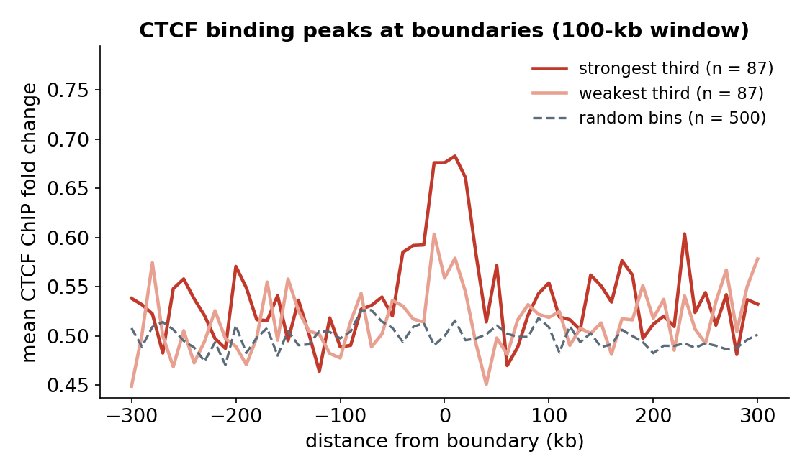
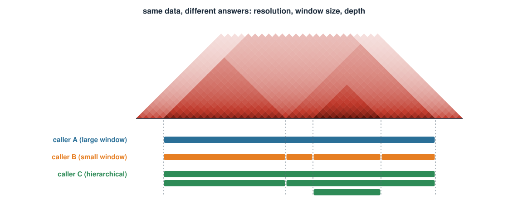
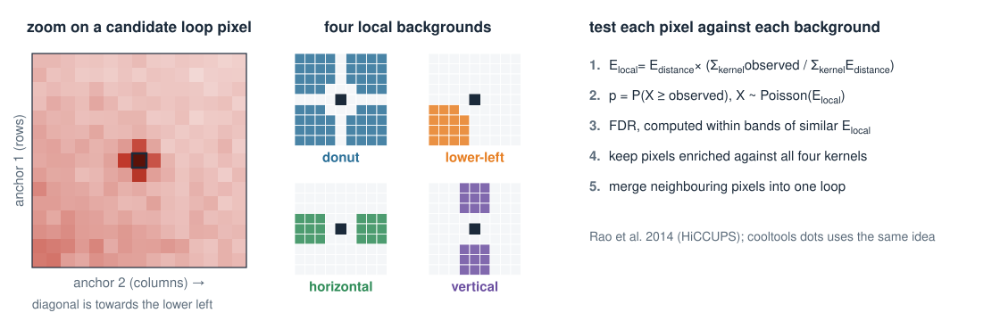
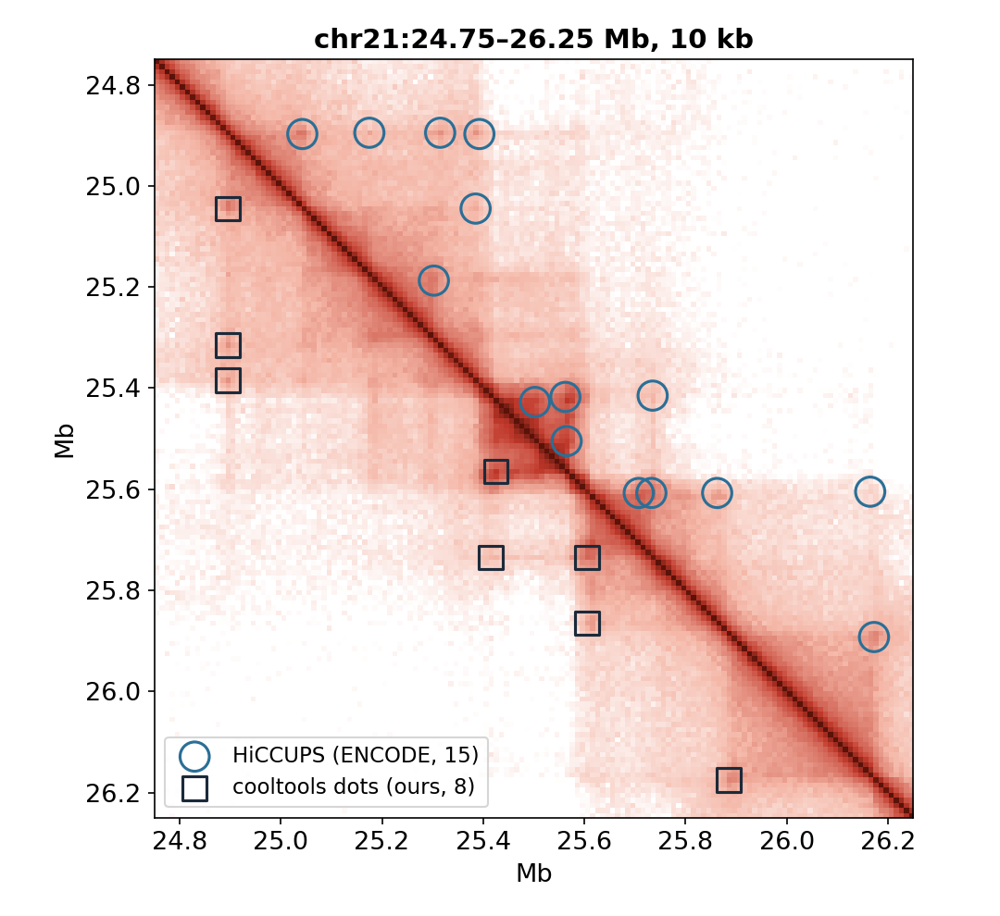
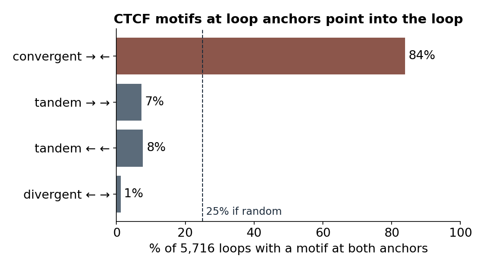
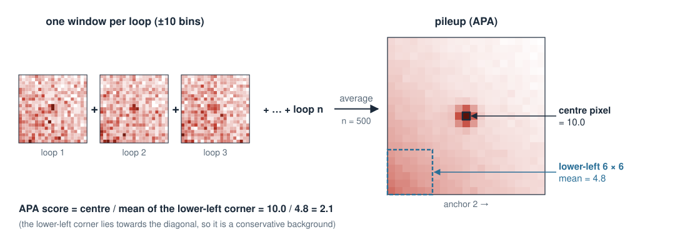
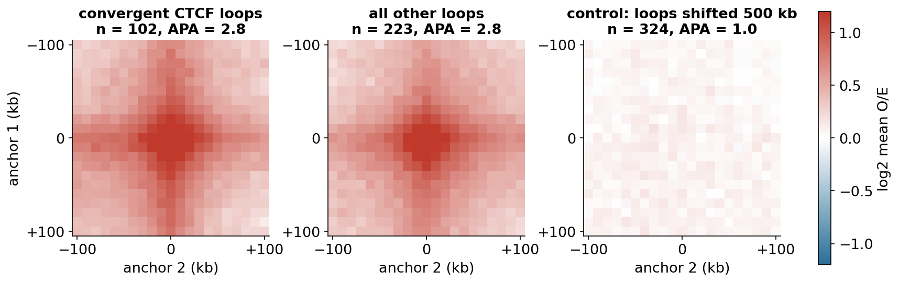
import cooler, cooltools, bioframe
clr = cooler.Cooler("gm12878_hic_chr19_chr21.mcool::resolutions/100000")
exp = cooltools.expected_cis(clr, view_df=view) # P(s) per chromosome
eigvals, eigs = cooltools.eigs_cis(clr, view_df=view, phasing_track=gc) # compartments
S, N = cooltools.saddle(clr, exp, eigs[["chrom", "start", "end", "E1"]], "cis", n_bins=5, view_df=view)
clr10 = cooler.Cooler("gm12878_hic_chr19_chr21.mcool::resolutions/10000")
ins = cooltools.insulation(clr10, [100_000, 200_000, 500_000], view_df=view10) # boundaries
dots = cooltools.dots(clr10, expected=exp10, view_df=view10) # loops
stack = cooltools.pileup(clr10, loops, view_df=view10, expected_df=exp10, flank=100_000) # APA.mcool files.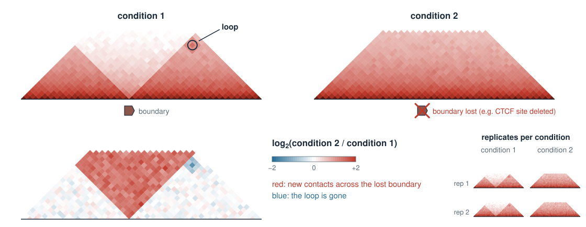
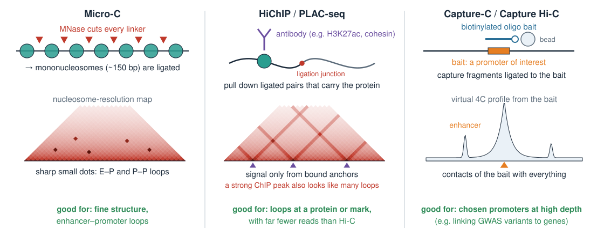
| feature | statistic | real data (GM12878, chr19 + chr21) |
|---|---|---|
| compartments | E1 of O/E (correlation), phased by GC | 57% / 46% A; ρ = 0.71 with H3K27ac, −0.61 with H3K9me3 |
| compartment strength | saddle: (AA + BB) / (AB + BA) | 6.6 (5 groups, 100 kb) |
| boundaries | insulation score minima (window w) | 261 / 160 / 98 for 100 / 200 / 500 kb; enriched at CTCF |
| loops | dots vs local backgrounds (HiCCUPS, cooltools) | 178 dots at 10 kb; 96% match HiCCUPS |
| loop anchors | CTCF motif orientation | 84% convergent (of 5 716 with two motifs) |
| loop strength | APA: centre / lower-left | 2.8 at called loops; 1.0 when shifted |
Not required reading and not examined. For those who want the primary literature.